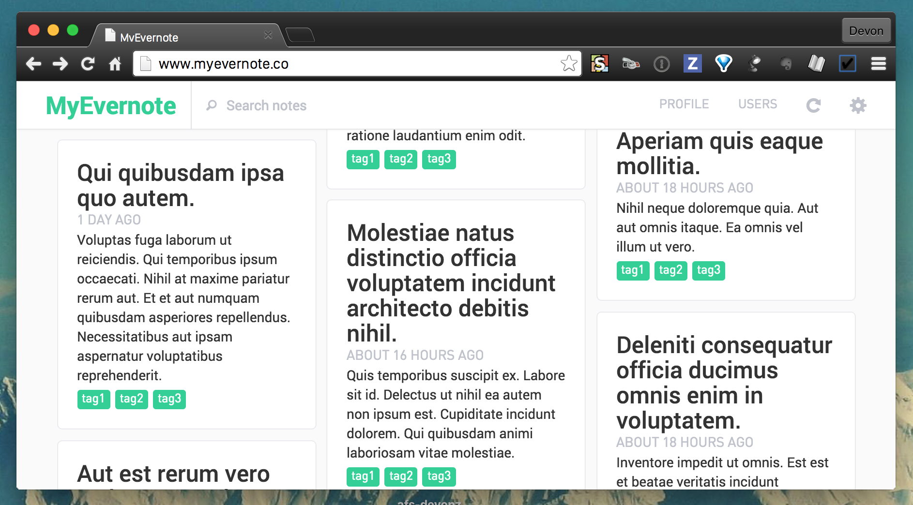

Projects
- Computing Pioneers video series
- Curios
- Clarity
- Aldine: syntax highlighting for English
- MyFitnessPal API
- Isostamp
- Mr. Schelling's Neighborhood
- TiddlyLisp
- Instanote
- Congressional Bill Outcome Predictor
- Affitto
- My Evernote
- Zen Writer
- OrigamiJS
- Fiesta: Machine Translator
- Octagon
- Paper Trail
- In Other Words
- Bubble
Computing Pioneers video series
Like Chef's Table, but for computing pioneers / engineers rather than chefs.
More info to come!
Curios — curios.city
Curios is like Quora, but for urban infrastructure projects.
Answering questions about big urban construction projects usually requires a Google search and then digging through a bunch of information, but what I'd like to be able to do is just geolocate myself on a map and see a little marker for the project, to click on it, and learn whatever key facts I want about the project.
For example, the Transbay Terminal has been under construction as long as I've lived in San Francisco. Whenever I walk past it, I wonder "when are the buses going to start running?". I wonder other questions too, like how much it cost, who lobbied for it at City Hall, what its capacity will be, and so on. It's surprisingly hard to get information about these questions, and even more so for less prominent projects going on around the city.
Over time, I've developed a detailed mental map of infrastructure changes going on in the city. I've always wanted these reflected in a single place, as a way to both better remember this information and share it with others. Also, when I'm in another less familiar city, I'd also love to be able to explore
Infrastructure is often underappreciated. It's expensive, the victim of tragedies of the commons, and all too easy to take for granted. Most people only notice infrastructure when it isn't working for them — great infrastructure tends to disappear when it's doing its job right. My hope with this project is to bring a little more hope and positive attention to the infrastructure that's being created and maintained around us.
And even if no one else uses it, I'll have a place to keep my own personal notes about cool projects going on around me. :)
You can find Curios at curios.city, and the source code is on Github.
Clarity
"Science is a way of thinking more than it is a body of knowledge," said Carl Sagan. Writing is similar—it is a process, not a position. It's as much about challenging and polishing an idea as it is about the idea itself. When I've written something, I'm suspicious when my view doesn't change at least a little before I share it with the world.
Almost everything I publish is radically different from its original draft. Discussion, feedback, and reflection mark the most valuable stage of the writing cycle, because they might uncover a neglected argument, produce a stronger rhetorical structure, or cause me to question my assumptions all together. This process can continue after publishing, too. Writing is just a snapshot in time of the author's thoughts, and it can get out of date as they learn more. Some of the biggest updates I've had in my worldview occurred after (and in some cases because!) I published an essay on the topic.
Most writers describe a similar process, but it is hidden from the reader. Writers constantly make decisions about what to say and how to articulate it, but we only see the result. The margins of my Google docs are filled with comments from friends, and it's fascinating to see how these conversations, questions, and disagreements inform the final result. But in the end, they are resolved into oblivion, and the final version contains no trace of the commentary. A lot of work happens before the writer hits "publish", but that process is invisible.
With Clarity, I played around with some workflow ideas for bringing the revision process to the forefront, without drowning the reader in the detail that the author intentionally (and rightfully) abstracts away from them. I still haven't figured out great solutions for these problems, and Clarity is very much in the not-yet-usable, "shitty prototype" stage, but I'll continue testing out ideas in here over time.
You can find the source code on Github.
Aldine: syntax highlighting for English
A while back, I learned Rob Pike believes that code shouldn't be syntax highlighted. He argues that we get along just fine without it in English, so it's just a distraction. That made me think, "Well why don't we have it English?" It seems like more of an accident of history rather than an intentional design decision. Anyways, what are bolding and italicizing if not a limited form of syntax highlighting?
Years ago, I developed a method of reading where I focus on verbs to “anchor” clauses and then attach the rest of the sentence to those anchor points. I found it helps me to read faster and with better comprehension. Similarly, I realized that I understand just as much when I all but ignore articles and other filler words (e.g. “a”, “the”).
These experiences made me wonder what changes we could make to text to improve the experience of reading. I tried a few different syntax highlighting schemes, with some interesting results. You can find the collection of these experiments on Github. I never got around to finally deploying the final project, but it shouldn't be too hard to get it running locally from the README in the repo.
MyFitnessPal API
I've tracked my eating habits for the past eight years, and I've since added other health and productivity metrics. Data have piled up in the spreadsheets, services, and other tools I've used to collect these measurements. So far I've done little with it, but I always imagined that they would one day uncover some pattern that would suggest changes in the way I eat, work, or exercise.
So in 2016 when I started experiencing extreme fatigue nearly every afternoon, I decided to investigate whether there was a connection between the food I was eating and my energy levels. My hypothesis was that eating carbohydrates was making me “crash” in the afternoon, because I tended to feel better those days I stuck with just veggies and protein for lunch.
To test this hypothesis, I went to MyFitnessPal (MFP), where I'd been collecting data about my eating habits since high school. To my dismay, they did not have a public API or even a tool that would let me export more than a few months of data at a time. I found a few third-party tools that let me cobble together the logs, but they felt as if they were duct-taped together.
At this point, any reasonable person would have just accepted this fact and used the manual workarounds to export the data. After all, my goal was to find data to confirm or falsify my hypothesis, not to have a beautiful REST API from which I could continuously pull my food logs.
Instead of being reasonable person, I decided to build a little service that would pull all of my logs each day, persist it to a separate database, and then surface the data with a JSON API. I initially planned to write a simple web scraper to do the retrieval work. With a bit more digging through Github's less-than-spectacular search (and encouragement from John <3), I found a project by someone even less reasonable than me that inspired the approach I ended up taking.
Nathan Reynolds (nathforge on Github) had figured out that in fact MyFitnessPal did have an API, it just was for internal use in the official iPhone app only. Not only was the API completely undocumented, but the MFP team had created a custom byte encoding by which to send the data. I still have no idea how he figured out the spec of this encoding, because a lot of the design choices made appear completely random. However he did it, Nathan had built up this codec that took the stream of bytes and parsed them into a human-readable form.
Nathan's myfitnesspal-sync was a goldmine for understanding MFP's arcane encoding, but it had some drawbacks. The package didn't support every type of packet, which mean I would have had to extend his code to be able to sync all of my data from MFP. Also, I didn't particularly like the interface he'd designed, and it was completely untested. It also had to be manually run from the command line, whereas I wanted something that would continuously sync the data. On top of all this, I'd be looking for a reason to write some Ruby this summer, so I figured this was a good excuse to do that.
I first wrote a package to decode the MFP packets and the encode human-readable data back into the byte form. All the while I was plagiarizing Nathan's detective work (yay open source!). Thanks Nathan, you are a hero.
Once I was satisfied with my Ruby implementation of the codec, I built a tiny Sinatra API to surface the data. This part is still a work-in-progress. It works, but it isn't particularly robust. There's still a bit more work to do.
I still haven't gotten around to a significant amount of data analysis. I did use Metabase to analyze the data in my Heroku Postgres instance over the holidays, but there's definitely more to dig into.
You can find the code for the full API on Github. The module for just the codec implementation is in that repository in the lib directory. Once the API itself is stable, I'll make it available to anyone who wants to sync and retrieve their MFP data.
Isostamp — isostamp.org
Isotopic signature transfer and mass pattern prediction (Isostamp) is an enabling technique for chemically-directed proteomics. Specifically, it is an algorithm for the targeted detection and identification of modified species by mass spectrometry (MS).
Will Byrd and I worked with the Bertozzi Lab to develop their Isostamp algorithm. We also built a simple API so developers can run the executable in the cloud, and we built a web application that enables other labs to use Isostamp to upload and analyze their own data.
You can find the code for the API at github.com/devonzuegel/tagfinder-api.
You can upload your own data and learn more about Isostamp at Isostamp.org, and you can find the code for the web app at github.com/devonzuegel/Isostamp-web-v2.
We will be open-sourcing the C++ code for the algorithm soon.
Mr. Schelling's Neighborhood
Ever since reading about Schelling's "general theory of tipping" in Seeing Around Corners, I've wanted to replicate some of his models and play around with agent-based modeling as a technique.
Schelling's model of segregation found that if individuals have even just a slight preference to be surrounded by people of their own group or race, the emergent effect across a population can be total segregation, even if that is not the intention of any specific agent. This effect can be seen with a simple ABM, which I've implemented below.
You are looking at a birds-eye view of a simulated neighborhood containing two groups, blue and red with a handful of blank spaces. To start, the blues and reds are randomly distributed. Then, frame after frame, the agents are allowed to move. The agent is happy with its position if its nearest neighbors include at least a certain number of its own color; otherwise, they move to a random open space on the map.
The default number of same-colored neighbors required to make an agent satisfied with its location is the threshold, and the percent of "empty lost" on the map is the percent open. You can adjust these with the controls in the top right corner of the model.
You can find the ABM code on Github, and you can see a larger version of the model here.
TiddlyLisp
To learn the fundamentals of Lisp, I built a little interpreter based on Michael Nielsen's fantastic blog post Lisp as the Maxwell's Equations of Software. I included extensions to resolve some of the challenge problems he mentioned at the end of the post, too.
You can find the code for the interpreter on Github.
Instanote
About a month ago, I started using Instapaper obsessively. However, it left me with one major problem – all of my Instapaper bookmarks and highlights were isolated from the knowledge that I (obsessively) store in Evernote, and I wanted to have them all in one place. After all, a personal knowledge base is useless if it doesn't contain half of the things I read throughout the day.
Instanote solves this problem by syncing the text of my archived Instapaper bookmarks with their respective highlights into Evernote every 10 minutes. I figured other people might have the same frustration with Instapaper, so I built out a little Heroku app that allows other people to sign up too rather than just hard-coding my login info into a hacky script.
You can sign up at instanote-archive.herokuapp.com and see the source code on Github.
Congressional Bill Outcome Predictor
Emma Marriott, Arushi Jain, and I built a predictor that identifies which US bills will succeed in the House & Senate. We tried several different prediction methods, including: Naive Bayes with and without Principal Component Analysis (PCA), Logistic Regression, Support Vector Machine (SVM) with PCA, and Perceptron with PCA. PCA identified the 500 most important features of a set of 11,000. Each predictor was modeled on data from the 109th – 113th Congresses from a wide range of structured & unstructured sources, including lobbying information. SVM with PCA proved to be the best model. It predicted bill outcomes with 94% precision & 87% recall, resulting in an F-measure of 0.92.
You can learn more about our research and data here.
Affitto
San Francisco and the greater Bay Area have been struggling with housing shortages and decisions about how to best serve the community with policies to deal with this situation. At a micro level, we have a fairly good understanding of how individuals make economic decisions such as where tenants choose to live and how much rent landlords choose to charge. However, we lack tools to model the complex interactions of millions of individuals simultaneously making decisions and the emergent phenomena that result from these interactions.
John Luttig and I built an Agent Based Model (ABM) to simulate emergent behavior within housing markets and explore the impact of policies such as rent control and zoning regulations. With this project, we aim to provide a tool for policymakers and stakeholders to better understand these interactions that in aggregate comprise the housing market. Understanding large-scale systems requires understanding how the results of individual actions can be more than the sum of its parts. We used ABM to simulate the actions and interactions of tenants and landlords.
Here is a small version of one of our models. You may have to close the controls (by clicking the bottom of the control panel) in order to see the full simulation.
You can find the ABM code, housing data with which we initialized the model, and further information on the analysis we performed on the resulting network at github.com/devonzuegel/affitto. You can see a larger version of the model here.
My Evernote
I love Evernote. On any given day I usually create about 15 notes, ranging from highlighted blog posts and articles to trip itineraries and to-do lists. The bulk of these notes are clippings from around the web that I've read and annotated with Evernote's Clearly extension.
Evernote has lots of great sharing capabilities, including joint notebooks, public links, and social sharing. However, I've always wanted to publish a sort of feed that shares a select set from my annotated notes and displays what my friends have read. What I want is a bit like Medium, but where the posts aren't necessarily from that platform, simply clipped with Evernote into a notebook.
As a fun way to solve this little problem of mine and to teach myself more about Rails testing frameworks, I'm working on a little app called My Evernote. When I'm done, it'll automatically sync all of your notes except those you especially tag #private. Then each evening you receive an email asking which of the synced notes you want to "publish" on your feed. It's a simple app, but I quickly learned that the Evernote documentation for Rails is basically non-existent, so it's also been a fun way to add to that.

You can find the open source code for the project on Github and the app at myevernote.herokuapp.com.
Zen Writer — zenwriter.herokuapp.com
The most difficult part of writing is that first draft. Putting your ideas to paper to generate that initial content is hard, because it's natural to edit your thoughts while translating them into words. However, this can severely hamper progress and creativity during early drafts. I've learned that I write better content faster if I don't censor myself initially and then only allow myself to revise and edit after I've exhausted my ideas. However, it's extremely difficult to contain that urge to filter out the less well-formed ideas.
During spring quarter finals, I was assigned a 10 page paper. Just three days before it was due I had a one page draft despite hours of research and staring at a blank screen. I had lots of ideas in my head, but every time I started typing I ended up using the delete button almost as much as all my other keys combined.
Since I wasn't making any progress anyways, I decided to take a break and built a tiny text editor called Zen Writer. It disables the delete button, highlights the current line, and fades out past content so that your attention is focused on moving forward and generating more content.
It didn't take much work to build a rough version, and as soon as I finished I was back to writing that first draft of my paper. In the first 15 minutes, I generated about 600 words. When I went back to revise what I'd written, I was surprised to find that most of my changes were to fix minor typos rather than large, conceptual revisions.
I finished that first draft in just over 2 hours and spent another hour the following day to revise my work, and the resulting paper was among the best I've written in my time at Stanford. Since then, I use Zen Writer every time I get stuck writing, from emails to blog posts to READMEs. I hope other people find it useful too, though I will warn you that it's still very rough and simple!
You can find the open source code for the project on Github and the app at zenwriter.herokuapp.com.
P.S. As a more robust solution to this problem, I now use the First Draft Mac app from 96 Problems. It offers all the features I built, planned to build, or never even realized I needed in ZenWriter. Ben and the whole team are super responsive and helpful too, so in short I highly recommend the app if you're looking for a tool to solve this problem!
OrigamiJS
Over spring break I decided I wanted to play around with coffeescript, so I built a little script to hierarchically fold elements on a webpage. I originally built it so I could fold long blog posts and class notes I had written in Markdown. The idea was inspired by the great header folding in Marked2, my favorite Markdown previewer, so by default Origamijs folds traditional <h*> and <p> elements as defined by Markdown. Origamijs also allows clients to define their own hierarchy, in the case that they're using unique tags or prefer to ignore certain levels of the traditional Markdown tag hierarchy.
You can find the open source code for the project on Github and example usage here.
Fiesta: Machine Translator
Zoe Robert, John Luttig, and I built a Spanish to English machine translator, which we called Fiesta. It is based on the IBM Model 1 algorithm and also implements several Spanish-specific strategies for improving results.
IBM Model 1 is an expectation-maximization statistical alignment algorithm. Given known pairings of Spanish and English sentences, it generates a matrix of probabilities whose rows correspond to the Spanish vocabulary and columns correspond to the English vocabulary. The value at any given cell in the matrix represents the probability that those two words have co-occurred within translations of each other. This table is then used to estimate a model for future translations.
In short, IBM Model 1 looks for the most likely English word for a Spanish word (e.g. “dog”) based off our knowledge of co-occurrences within sentences. As such, if there are no translations of a given Spanish word s that contain a given English word e, the value of the cell at the corresponding row and column will be 0.
The algorithm requires 3 components:
- a language model to compute
P(E)(the prior) - a translation model to compute
P(S|E)(the probability that a Spanish wordstranslates to an English worde) - a decoder that produces the most probable translation
Pseudocode
initialize transl_prob(e|s) uniformly
do until convergence
set count(e|s) to 0 for all e,s
set total_s(s) to 0 for all s
for all sentence pairs (en_sentence, sp_sentence)
set total_e(e) = 0 for all e
for all words e in en_sentence
for all words s in sp_sentence
total_e(e) += transl_prob(e|s)
for all words e in en_sentence
for all words s in sp_sentence
count(e|s) += transl_prob(e|s) / total_e(e)
total_s(s) += transl_prob(e|s) / total_e(e)
for all s
for all e
transl_prob(e|s) = count(e|s) / total_s(s)
You can find the open source code for the project on Github.
Octagon

This past summer, I designed and built an app called Octagon, a tool for venture capital firms. Octagon helps VCs better manage relationships with portfolio companies by visualizing important metrics about company growth and providing a repository for financial documents and quarterly updates. It also facilitates interaction between investors and board members and the startups in their portfolios in an analogous manner to CRM software. Octagon is currently in beta testing at Formation|8.
I was responsible for the full-stack of the app, though I was lucky enough for the last few weeks of the project to work with a friend named Zack who helped me immensely with the front-end, especially user interaction and fully utilizing the capabilities of our graphing libraries.
You can find the open source code for the project on Github.
Paper Trail
Some of the greatest impact individuals can have on politics is driven by daily purchasing decisions. Any time an individual patronizes a corporation, (s)he is fueling the company's lobbying and donorship capabilities and is indirectly supporting their political causes. Unfortunately, the impact of corporate political contributions is largely opaque to the general public, and the research about corporations' political activity is a tedious, complex task.
In early 2014, I set out to solve this problem with a project called Paper Trail. The web app provides users access to political profiles of companies and manufacturers. Visualizations and statistics about companies political contributions and lobbying behavior help consumers make informed choices about where their money is going. In turn, consumers' more thoughtful choices empower those corporations that represent their values.
Paper Trail was the first programming project that I pursued outside of class and has evolved significantly since I first implemented it in early 2014. It began as a simple HTML/Javascript app into which users could query the names of companies and learn about their political contributions.
You can find this initial prototype here and the open source code base on Github.
Last month, I decided to completely refactor and improve upon Paper Trail with the help of a few friends. We realized that it was unlikely that users would consistently use the app alongside real-life spending, because it would require the tedious process of pulling their phone out of their pocket, typing in the company name, and analyzing the results. We had to find a way to integrate Paper Trail more seamlessly into the users' existing workflow.
We decided that a browser extension would be far more effective than the original idea of a standalone website. Our extension lies on top of Amazon and automatically alerts users of the political activities of the manufacturers of the items in the user's cart. Beyond solving the problem of relying on users to take action, our new strategy also narrowed our focus to a single site — Amazon — and its users. This had the benefit of leveraging our own experience as Amazon customers, using Amazon's fantastic API, and generally focusing our energy on specific goals rather than broad ones.
The Paper Trail extension is currently under development. You can find an rough interactive prototype on Invision and the open source code for the actual extension on Github.
In Other Words

My brother Jeffrey was born with Cerebral Palsy and is on the autistic spectrum. Life with Jeffrey is challenging for both of us because he doesn't always communicate effectively in the conventional way, in “English.” However, he has found alternative modes with the help of his team of teachers, therapists, family, and friends.
In my junior year in high school, I became fascinated with his growing ability to communicate in non-conventional ways and decided to devote several months to learning more about this process. After conducting extensive interviews and reading further into psychology and cognitive science, I published a documentary book called In Other Words about how he and his team discovers and develops those alternatives.
You can find the book on Blurb.com.